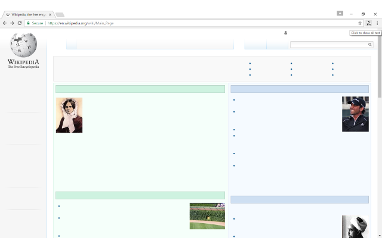

大多数人每天都在用广告拦截扩展。还有人会选择禁用图片、flash、java 之类的东西，唯独文字没法禁用。所以我决定让这件事成为可能，至少在 Chrome 里。（upd：Rafaël Rozendaal 和 Jonas Lund 早在 2013 年就做到了，见文末的更新）
你猜怎么着？我还挺喜欢的。原来文字已经没那么重要了（嗯，直到你打开 Reddit 为止）。
它本可以是个艺术项目，但其实相当实用。我喜欢 YouTube 去掉这些文字之后变得更好的样子，猫咪的图片也很不错。
我做了一个扩展，源代码在这里：https://github.com/nettsundere/TextBlock
可以在 Chrome 网上应用店下载：https://chrome.google.com/webstore/detail/textblock/cbjhcabimjmeokngojdenfdpiccgekmd

UPD Rafaël Rozendaal 和 Jonas Lund 早在 2013 年就做过一个类似的应用
今天（2017 年 4 月 17 日）我发现，类似的扩展早就有了。它叫 Text Free browsing，免费，可以在应用店的这个页面下载：https://chrome.google.com/webstore/detail/text-free-browsing/ioglfbphilinnhdmfbmfljmhemegfcdg/
项目介绍：http://www.newrafael.com/text-free-browsing/
我注意到的唯一功能差别是：TextBlock 会屏蔽动态添加的 iframe 里的文字，而 Text Free 这个浏览器扩展会让它们保持原样。
我完全不知道已经有人做过了。看来下次我得更认真地 Google 一下。
原文发表于 Medium：https://medium.com/@nettsundere/a-text-is-not-that-important-b586eb0e6087